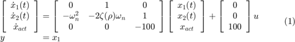
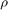
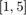
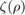
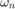
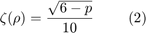
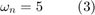
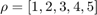
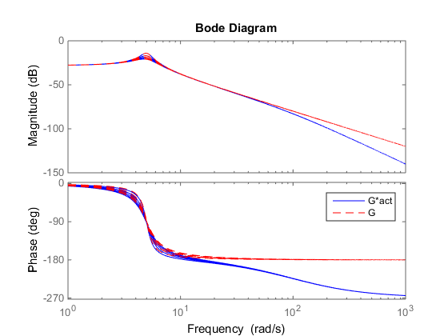
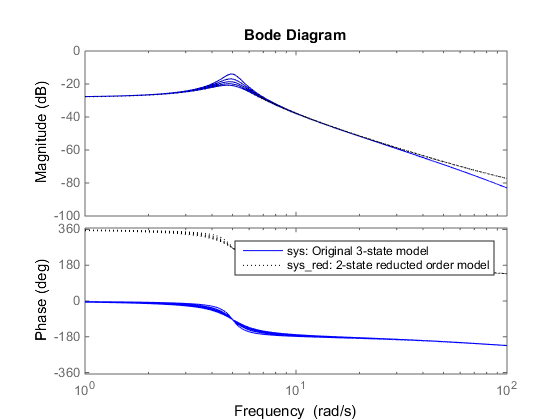

LPV Model Reduction for a Stable LPV System:
Consider a third-order parameter dependent system:

where the parameter  lies in the interval , and the coefficients  and  are defined as:


We note that the system consists of a second order system, with damping coefficient and natural frequency , that is in series with a first-order actuator at its input. The actuator has a pole at 100 rad/s, which is two orders of magnitude higher than the natural frequency of the second-order system. Hence, if the dynamics at low frequency are the main object of interest, it is possible to remove the actuator state from this 3 state model, with minimal effect in the frequency band where the second-order dynamics take place. Lets do this using LPVTools.
% Define the time-varying rho parameter as a gridded real parameter: p = pgrid('p',1:5); % Define the second-order system: zet = sqrt(6-p)/10; wn = 5; G = ss([0 1;-wn^2 -2*zet*wn],[0;1],[1 0],0); % Define the first order actuator: act = ss(-100,100,1,0); % Define the plant model which consists of the the second-order system and % the actuator in series: sys = G*act
PSS with 3 States, 1 Outputs, 1 Inputs, Continuous System. The PSS consists of the following blocks: p: Gridded real, 5 points in [1,5], rate bounds [-Inf,Inf].
Lets compare the frequency response of sys and G at the five grid points: 
freq = linspace(1,1e3,5000); bode(sys,'b',freq) hold on bode(G,'r--',freq) legend('G*act','G') hold off
We note the actuator pole kicking in at 100 rad/s, and that its effect on the second order dynamics is negligable. Hence, it should be safe to remove 1 state from the model if we are only interested in the system's dynamics at low frequency.
lpvbalancmr will compute a balanced realization of the LPV system sys and then remove those states that contribute least to its input/output behaviour. sys has 3 states, we will call on lpvbalancmr to remove 1 state and generate a balanced realization with only 2 states.
% The first input to |lpvbalancmr| is the system to be reduced. The second input % is the desired state order of the output: [sys_red,info] = lpvbalancmr(sys,2);
sys_red is the 2 state reduced-order model:
sys_red
PSS with 2 States, 1 Outputs, 1 Inputs, Continuous System. The PSS consists of the following blocks: p: Gridded real, 5 points in [1,5], rate bounds [-Inf,Inf].
info stores results for the model reduction. Lets look at the relative size of the Hankel singular values associated with the states in the balanced version of sys:
info.StabSV
ans =
0.1115
0.0915
0.0006
We see that one of the states has a Hankel Singular value that is two orders of magnitude smaller than the smallest Hankel Singular value of the other two. This indicates that it removing this state will have a minimal effect on the accruacy of the resulting reduced order model.
Lets compare the frequency response of the original three state system sys, and the reduced order second-order system sys_red.
freq = linspace(1,1e2,5000); bode(sys,'b',freq) hold on; bode(sys_red,'k:',freq) legend('sys: Original 3-state model',... 'sys_red: 2-state reducted order model','location','northeast')
We note that the frequency response in of the original three state system and the reduced order system is identical up to approximatly 30 rad/s.
References
- G. D. Wood, "Control of parameter-dependent mechanical systems," Ph.D. Dissertation, University of Cambridge, 1995.
- G. D. Wood, P. J. Goddard, and K. Glover, "Approximation of linear parameter-varying systems," IEEE Conference on Decision and Control, Vol. 1, pp 406-411, 1996.
- R. Widowati, R. Bambang, R. Sagari, S. M. and Nababan, “Model reduction for unstable LPV system based on coprime factorizations and singular perturbation,” 5th Asian Control Conference, Vol. 2, pp. 963-970, Melbourne, Australia, 2004.